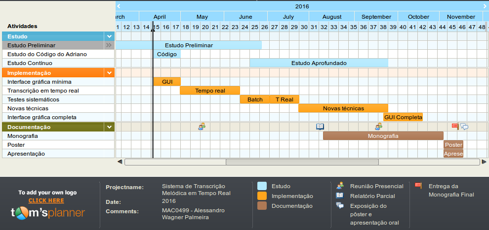

Introdução:
Essa é a proposta do meu Trabalho de Conclusão de Curso. O tema será "Sistema de Transcrição
Melódica em Tempo Real" e terá como referência principal o TCC de Adriano Brito Mitre, com tema
"Sistema Automático de Transcrição Melódica" do ano de 2005.
Motivação:
O avanço da tecnologia de Computação Musical vem trazendo novas áreas de interesse tanto
acadêmicas quanto comerciais em sistemas de transcrição musical com novas técnicas de transcrição
monofônicas e polifônicas, sistemas de geração automática de partituras, resíntese, busca de
informação musical e outras. Exemplos comerciais incluem jogos como Guitar Hero e Rock Band,
serviços como Shazam e ScoreCloud, e aplicativos como PitchScope e intelliScore Ensemble.
Apesar do grande interesse acadêmico e comercial, a quantidade de software livre nessa àrea é
insignificante e esse trabalho pretende prover uma implementação livre, de uso irrestrito e
gratuito com uma qualidade de transcrição monofônica comparável aos softwares comerciais existentes.
Objetivo:
O objetivo final do trabalho será a transcrição em tempo real de melodias monofônicas, com
alto nível de robustez e eficiência, utilizando de técnicas já implementadas no TCC de referência
e também novas técnicas encontradas em estudos realizados nos últimos 10 anos. Além disso, uma
interface de usuário será implementada, fornecendo não só um retorno gráfico da transcrição
realizada, mas também uma interação em formato de jogo, onde o programa irá sugerir notas a
serem tocadas pelo usuário (tanto vocalmente, quanto em um instrumento) e atribuir uma pontuação
à sua performance.
Tarefas já realizadas:
- Busca de uma área de interesse e um orientador para o trabalho.
- Escolha do orientador: Marcelo Queiroz
- Enumeração de vários temas possíveis
- Estudo mais específico e conversa com o orientador
- Escolha do tema
- Leitura do TCC de referência e livros de referência mais genéricos
Tarefas a serem realizadas:
- Estudo preliminar
- Estudar artigos referenciados no TCC do Adriano Mitre e indicados pelo orientador
- Buscar artigos e surveys sobre novas técnicas estudadas nos últimos 10 anos
- Estudo do código do TCC de referência
- Compilar, usar e fazer pequenas alterações no código do ASyMuT para entender o seu funcionamento
- Implementação de uma interface gráfica mínima
- Implementar uma interface que mostre um gráfico simples de frequência fundamental estimada x tempo.
- Estudo aprofundado
- Continuar lendo sobre as técnicas de transcrição, escrever sobre elas na monografia e preparar para implementá-las posteriormente.
- Implementação da transcrição em tempo real
- Complementar o ASyMuT com a transcrição em tempo real, ou seja, certificar que o seu processamento é feito mais rápido do que a execução do arquivo.
- Testes sistemáticos
- Criar uma bateria de testes automatizados para complementar o TCC de referência e ser usada posteriormente para testar o trabalho atual.
- Mostrar comparações de transcrições esperadas/obtidas
- Implementação de técnicas novas
- Modificar alguns módulos do programa, implementando técnicas mais recentes de transcrição melódica
- Implementação da interface gráfica completa e da interação com o usuário
- Implementação de uma visualização em tempo real de F0 (utilizando gnuplot)
- Implementação de uma visualização discreta de F0, como um piano-roll (utilizando gnuplot)
- Implementação de uma visualização em notação musical padrão (utilizando LilyPond)
- Implementação de uma visualização textual de F0, com o nome da nota e uma desafinação em cents.
- Implementação da entrada em tempo real pelo microfone
- Implementação de um jogo simples para apresentação da ferramenta, utilizando um microfone para acertar notas e/ou intervalos melódicos e ganhar pontos.
- Elaboração da Monografia, Pôster e Apresentação
Cronograma:
Cronograma gerado no site www.tomsplanner.com
|  |